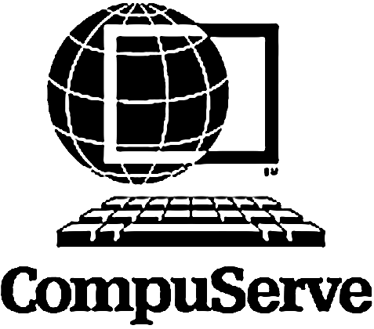
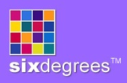
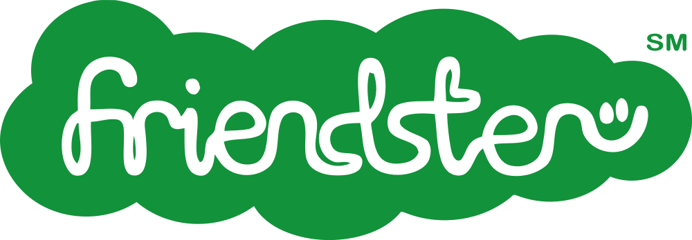
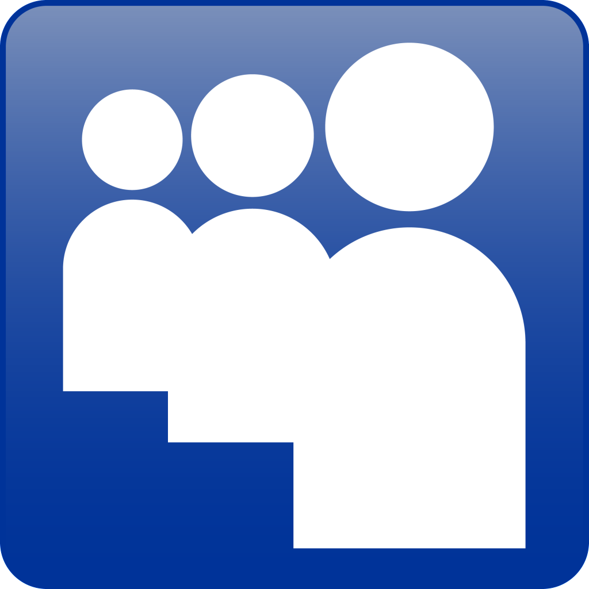
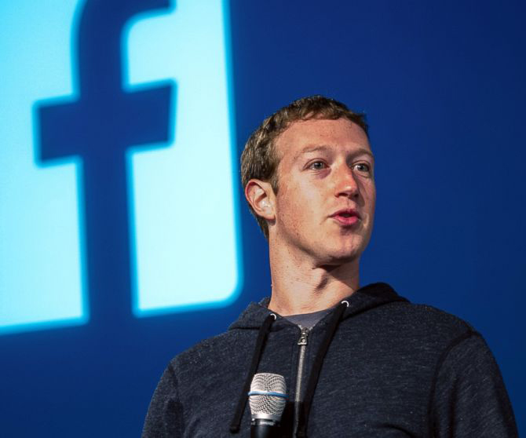

Social Networking
Social Networking is a large part of today's society. The use of the internet helps others connect to anyone around the world at any time.
The basis of social networking is inspired by the use of the Bulletin Board System (BBS). The BBS was developed by Ward Christensen in 1978 and allows users to create an account and share content of all kinds. The very first BBSes could only be connected via a dial-up modem and a phone line and were extremely slow. As modem speeds increased so did the popularity of BBSes. By 1996 the BBS was at its most popular state, just as the World Wide Web was gaining popularity. A few years later the use of BBSes faded as the WWW took over. People today still refer online message boards and forums as BBSes.
One of the first forum based websites created in 1979 was the CompuServe. CompuServe allowed users to share news, events and content with each other over dial-up connections. CompuServe was well known for its large array of forums and is messaging ability.
The basis of the message ability was created in 1988. Internet Relay Chat (IRC) allowed real time messaging This was a building block towards what todays social networking provides.
In 1997 Andrew Weinreich created Six Degrees, the first big social network. It featured the ability to upload a profile picture, add other users as friends and post about anything you want. Six degrees was popular but was closed in 2001.
2002 saw the launch of Friendster, created by Jonathan Abram. Friendster has the same concept as Six Degrees and gained much success. It was the first of the new wave of social networks which included, MySpace, Facebook etc. Friendster became very popular but by about 2008 Facebook had taken over. In 2011 Friendster rebranded to be a gaming platform website.
By 2003 MySpace had launched. MySpace quickly gained a large user base and was popular because of its music integration. But by 2008 Facebook had overtaken MySpace. As of 2011 MySpace was worth about $35million.
2004 saw the beginning of a social network empire. Facesmash was created by Harvard Student Mark Zuckerburg and a few of his college mates. The original idea was to compare two people using a hot or not principle using the profile pictures of the facebooks of Harvard. After getting expelled for hacking into the Harvard system Zuckerburg continued to create The Facebook. It began as an exclusive website for only Harvard students, and then other schools were allowed access. By 2005 The Facebook was going really well, students from schools all around the United States has facebook accounts. The same year the “the” was dropped from the name.
In late 2006 Facebook was open for all the world to access. If you were over the age of 13 you could create an account and join the fun. By 2007 Microsoft has purchased a 1.6% share of Facebook for $240 million. The estimated value was around $15 billion. In 2012 Facebook had begun selling stocks. By 2014 Facebook was worth more than $200 billion and is known as the most popular social network site worldwide.